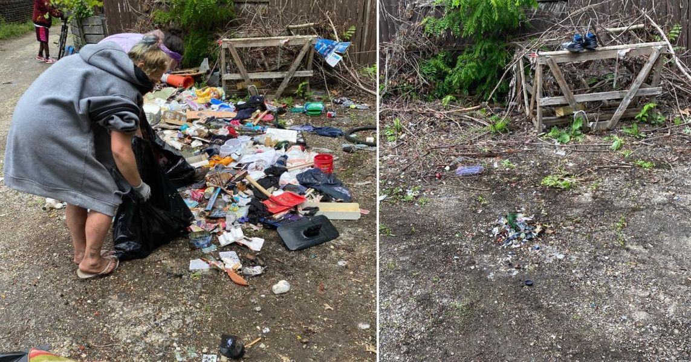

Mobile uploads
This is an area our Houseless Cleanup Crew cleaned last week.
I’m so tempted to fall into the trap of who deserves our help and who doesn’t.
This is trash from a person who moved out of the house on this property. It has been sitting there for several weeks.
“The landlord needs to clean this up,” I was saying in my head.
And I watched week after week as it just sat there and I got more irritated it wasn’t being cleaned up.
It was recently suggested to me that I “be the light.”
That’s the heart of it all for me now. I just want to be the representative of life, love and hope. It feels like a much more powerful transformer of minds and spirits. It also feels like what the world most desperately needs.
I certainly understand why people become angry and bitter. I fight it constantly. But anger is just a coping mechanism for profound sadness and loss. Allowing yourself to be sad is such a vulnerable place to be. Anger is a cathartic wall that protects your heart. I totally get it and don’t judge anyone in the least for lashing out to protect the most delicate and fragile parts of their being.
I don’t know why this landlord hadn’t picked up this trash. That’s none of my business.
Everyone deserves help, love, and forgiveness. (We either all deserve it or none of us do.)
So we cleaned it up and it came out really nice.
If you are able to donate to our Houseless Cleanup Crew it would help us a great deal. Your contribution gives homeless people meaningful work and the work helps the community.
The donate button is below.
Thank you for all your love and support.
Sage